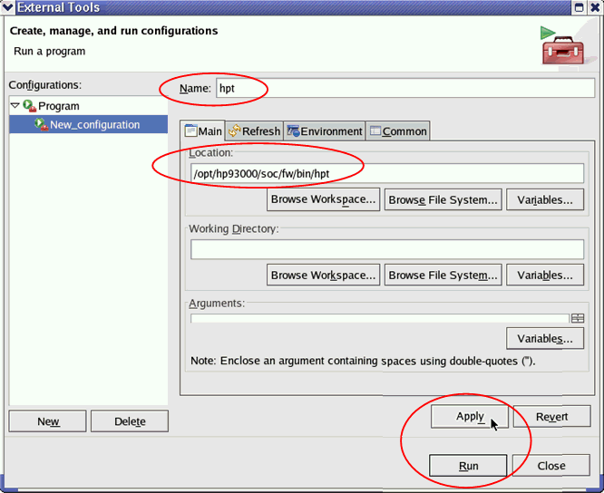
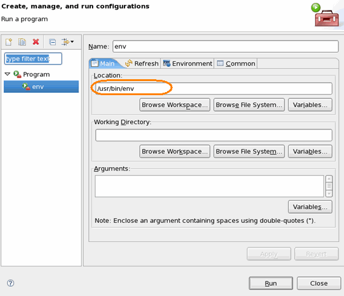
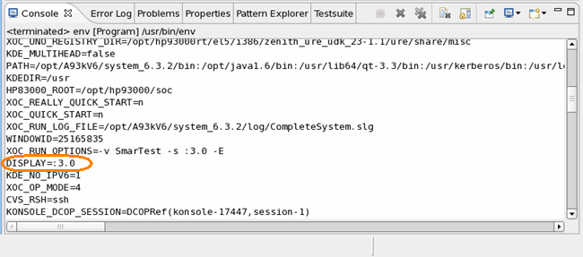
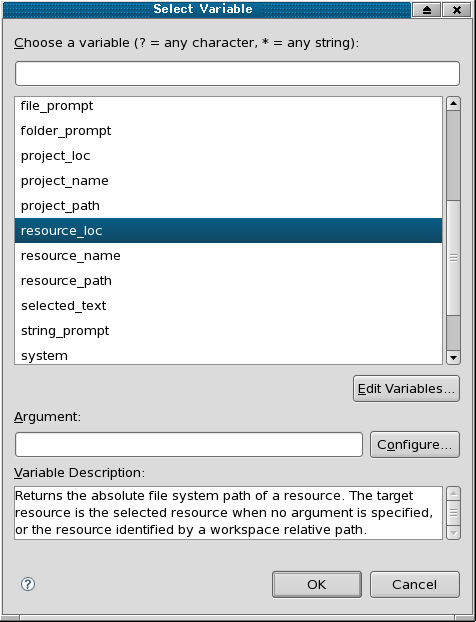
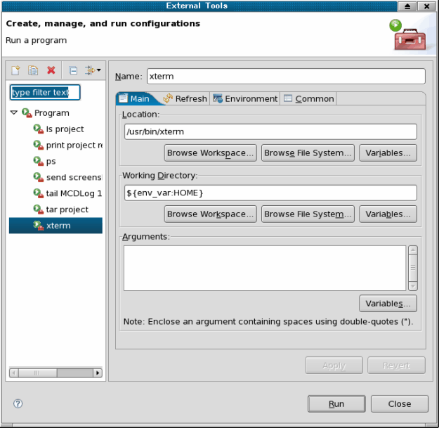

Running External Tools
About this task
SmarTest (Eclipse) provides a mechanism for running tools that are not part of it.
That means, you can start an external tool from inside SmarTest and add it to an individually configured perspective. Every time you start SmarTest with this perspective, you have the respectively configured tool available.
Procedures
Creating an entry for the tool and running the tool
- On the menu, select .
The External Tools window opens.
- In the left pane of the window select Program and click the New button.
- In the field Name, type a name for the tool.
- In the field Location, type the path to and the file name of the tool.

- Click Apply.
- To start the external tool, click Run.
- The External Tools windows closes and the external tool is started.
Adding the external tool to your personal perspective:
- In the short cut bar of the SmarTest Eclipse window select .
- In the upcoming window enter a name for your perspective.
Running external tools from a terminal
If you would like to run external
tools from a terminal, make sure that the environment variable DISPLAY_HP83000
or DISPLAY is set to the same value as SmarTest communicates to. The value of
DISPLAY_HP83000 will be used by the terminal if it is assigned. Otherwise, the
value of DISPLAY will be used by the terminal.
Getting the SmarTest DISPLAY value:
- In SmarTest run the external script /usr/bin/env as described above for
running an external tool.

- Check the Console view for the entry DISPLAY

NoteDISPLAY=:3.0is the same asDISPLAY=localhost.localdomain:3.0. orDISPLAY=localhost.localdomain:3.. The default values, like localhost.localdomain (for <computer>.<domain>) and .0 (second digit refers to the display), can be omitted. - Set the
DISPLAY_HP83000orDISPLAYto the SmarTest DISPLAY value.In a terminal type, for example:
- DISPLAY=:3.0
- export DISPLAY
- <tool>&Note
DISPLAY=:3.0is the same asDISPLAY=localhost:3.0. because localhost is the default value.
Environment Variables
You can use the external tool launch more flexible by adding environment depending parameters or user-defined input.
All such parameter additions follow the same concept: Inside the External Tools window, the Variables button allows you to dynamically add the value of a session related or project related variable.

To select a value of the current environment is pretty straight forward, which should be passed to the external tool. Another common case could be to set the working directory of the external tool launch to a specific directory. A trivial example of how to launch a terminal from users $HOME is shown below:

Project Specific Settings
A whole set of parameters deals with the current project and the current selected resource inside Eclipse (any visible file in the Navigator view is a resource). Using such a parameter, an external tool could use arguments like the current device directory, a selected level file, the current workspace, etc. Typical parameters are project_loc, resource_loc, workspace_loc, or project name. An example is given in 3.3.7.
User Dialogs
The highest flexibility for dynamic parameter is possible through direct user input. Eclipse offers three variable selections: file_prompt, folder_prompt¸ and string_prompt. As the names indicate, the user of the external tool launch will receive a dialog box to make a specific input, which in turn is passed to the launching application. The variable definition ${file_prompt:level setup file} would pop up a file selection dialog with the title Please enter a value for level setup file.
Functional changes
- Introduced before SmarTest 6.3.2
- SmarTest 6.5.0: Display variable no longer shown in report window